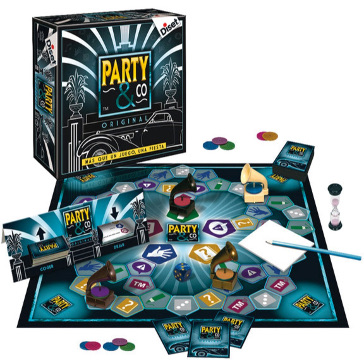

Party&Co
Party&Co Original es un juego muy divertido, cuyo éxito está asegurado en fiestas y reuniones sociales. Reúne lo mejor de los juegos de sociedad más divertidos. Se trata de realizar cada una de las 5 pruebas que componen el juego en un tiempo máximo de 30 segundos.
A DIBUJAR
Demuestra tu talento para hacer que adivinen sólo con trazos y dibujos ‘un satélite’.
LAS MARCAS
¿Podéis decir, al oir ¡1,2,3,ya! una marca de bombones y coincidir en la respuesta?
MÍMICA Y SONIDOS
¿Puedes hacer que adivinen, sólo con gestos y sonidos la acción: ‘pescar con caña’?
LA PREGUNTA
¿Puedes responder a una pregunta como: ‘cuál es la ciudad más poblada del mundo’?